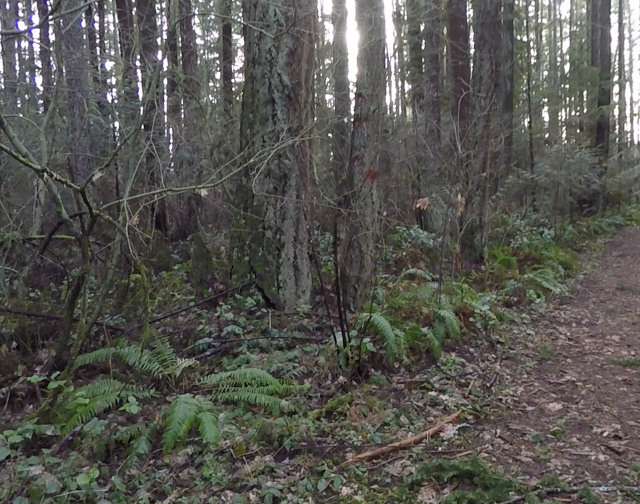
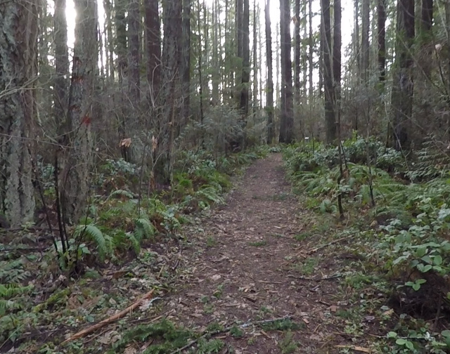
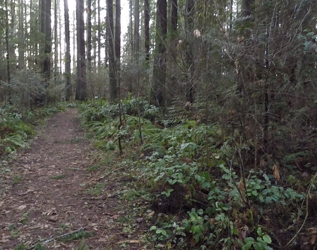
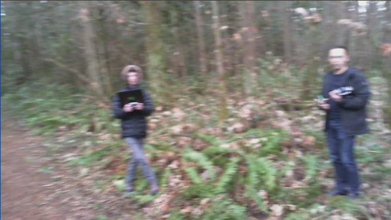
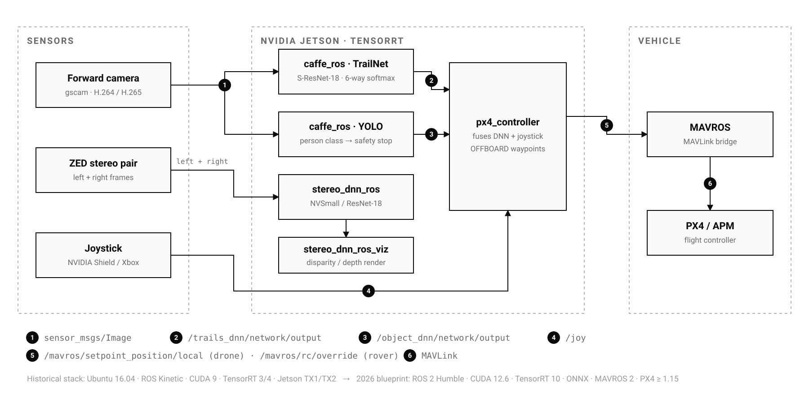
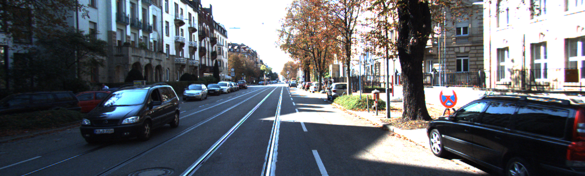
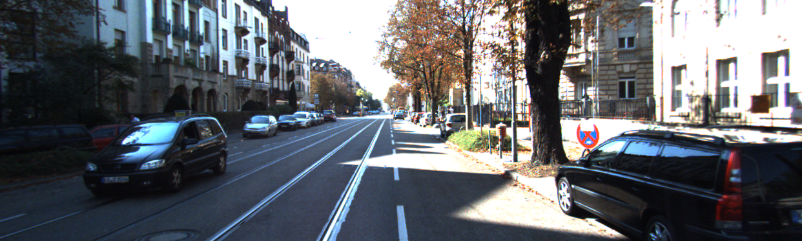

Abstract
Redtail was NVIDIA’s research stack for low-flying autonomous navigation: a TrailNet deep network estimates a vehicle’s orientation and lateral offset relative to a forest trail from a single forward camera, stereo networks recover depth from a ZED pair, and a PX4/MAVROS controller converts those estimates into flight commands — all running onboard a Jetson with TensorRT acceleration. Upstream development stopped in 2020. This note documents the curated snapshot I maintain at khlaifiabilel/autonomous-uav-visual-navigation: what the system actually does node by node, what a “faithful snapshot” means in verifiable terms, and the 2026 modernization blueprint (ROS 2 Humble, CUDA 12.6, TensorRT 10, ONNX, PX4 ≥ 1.15) that ships alongside it. No historical performance figures are re-measured here, and none should be inferred: the legacy stack is preserved and audited, not re-benchmarked.
1. What Redtail is, and why preserve it
Between 2017 and 2020, Redtail demonstrated something that was far from obvious at the time: a complete perception-to-control loop for GPS-denied trail following, running entirely on an embedded GPU, with no offboard compute, lidar or prior map. The IROS 2017 paper [1] reported autonomous flights over kilometre-scale forest trails. The engineering interest today is less the headline result than the shape of the system: a small, legible set of ROS nodes with narrow contracts, each replaceable in isolation.
The repository this note documents is a curated historical snapshot of the final upstream tree, not a fork that pretends the project is alive. Three claims define it, and each is checkable:
- Source fidelity: compared with the final upstream
master, the imported source code is unchanged. Repository-specific divergences are enumerated exhaustively: two presentation PDFs removed, four PNGs losslessly optimised, governance and metadata files added, documentation added, and two recorded metadata corrections. - Verifiable assets: every pretrained artifact — TrailNet and split YOLO Caffe models, stereo checkpoints — carries a SHA-256 checksum in the model inventory.
- Explicit versioning: tag
v1.0.0is the faithful legacy snapshot;mainadds only a documentation and modernization layer on top of it.
NVIDIA states Redtail has not been developed since 2020. The historical stack targets Ubuntu 16.04, ROS Kinetic, CUDA 9, TensorRT 3/4 and Jetson TX1/TX2. Nothing in the snapshot re-validates flight behaviour, and the repository is not safety-certified or suitable for operational autonomous flight without independent engineering and validation.

View rotated left
View centered
View rotated right
YOLO test framecaffe_ros integration tests. The three trail views correspond to the orientation hypotheses TrailNet is trained to separate; the street scene exercises the YOLO detection path. Images: NVIDIA Redtail test data, BSD-3-Clause.2. Perception: a six-way softmax that steers
TrailNet is deliberately austere. A Caffe S-ResNet-18 consumes a single monocular RGB frame and emits six softmax outputs in two groups of three: view orientation relative to the trail (facing left, centered, facing right) and lateral position across it (offset left, centered, offset right). Training data was collected with multi-camera rigs whose geometry supplies the labels; the design and its loss terms are documented in the paper [1] rather than re-derived here.
The insight worth retaining is the output contract. Instead of regressing a steering angle end-to-end, the network produces two interpretable class posteriors, and the downstream controller — not the network — owns the mapping from posterior to yaw and lateral correction. That separation is what makes the DNN swappable: any model that emits the same six-channel contract on /trails_dnn/network/output can steer the vehicle.
caffe_ros wraps inference in a ROS node backed by TensorRT, with FP32, FP16 and INT8 execution paths, on-disk engine caching, and entropy calibration for INT8. The same node also serves a YOLO detector on /object_dnn/network/output; a detected person can trigger a safety stop in the controller. Both paths carry rostest/GoogleTest coverage in the snapshot — runnable only on the historical GPU/ROS stack.

3. Stereo depth without a lidar budget
The stereoDNN library is the second research artifact in the tree, matching the CVPR Workshops 2018 study on semi-supervised stereo depth [2]. It provides NVSmall and ResNet-18-based stereo networks as TensorFlow 1.5 checkpoints, conversion tooling to TensorRT, and — the technically interesting part — custom CUDA/TensorRT plugins for the operations TensorRT 3/4 lacked: 3D convolution, cost-volume construction and soft-argmax. Each plugin carries GoogleTest coverage over its tensor operations.
In the ROS graph, stereo_dnn_ros consumes the ZED left/right pair and publishes disparity; stereo_dnn_ros_viz renders it for inspection. The historical role was environmental awareness alongside TrailNet’s steering signal.

Left frame
Right framestereoDNN sample application. The networks estimate a dense disparity map from this input; serialized TensorRT plans in the tree are tied to their TensorRT version and GPU and must not be assumed portable.4. Control: posteriors in, setpoints out
px4_controller closes the loop. It subscribes to the TrailNet posterior, the YOLO detections and the joystick, and publishes position setpoints on /mavros/setpoint_position/local for PX4 OFFBOARD flight — or RC-override and waypoint commands for an APM rover. The six TrailNet channels become a yaw correction (from the orientation group) and a lateral correction (from the offset group); the joystick remains the human arbiter throughout, and a person detection can stop the vehicle.
Two properties deserve note. First, the controller is vehicle-agnostic in intent: the same node drives a drone through MAVROS/PX4 and a ground rover through APM, switched by configuration. Second, the launch files encode their era — fixed serial devices, camera paths and private-network addresses are hard-coded and must be reviewed line by line before any reuse.
5. What “faithful snapshot” means in practice
Preservation without provenance is just hosting. The snapshot treats provenance as a first-class deliverable:
- Divergence ledger: the complete difference between this tree and the final upstream
masteris enumerated in the README and changelog — nothing else changed, and that claim is auditable by diff. - Model inventory: every pretrained artifact has a size and SHA-256 entry; the split YOLO Caffe model reassembles with a documented one-line
cat, and its checksum can be verified afterwards. - Citable history: a Keep-a-Changelog history,
CITATION.cffmetadata binding the snapshot to the underlying papers, and immutable release tags replace the branch sprawl of the original project (former platform branches were consolidated intomainafter alignment withv1.0.0). - Attribution: NVIDIA’s BSD-3-Clause license, source headers and package metadata are preserved throughout.
Snapshot fidelity is a statement about bytes, not behaviour. The historical test suites require the legacy GPU/ROS stack; no continuous integration re-runs them, and no flight or bench result in the original papers is re-validated by this repository.
6. The 2026 modernization blueprint
Alongside the frozen snapshot, the repository specifies a target stack for making the architecture — not necessarily the bytes — run on current hardware, with a phased migration plan and per-device Jetson strategy:
| Component | Historical target | 2026 blueprint |
|---|---|---|
| Operating system | Ubuntu 16.04 | Ubuntu 22.04 (containerised) |
| ROS | Kinetic (ROS 1) | ROS 2 Humble |
| CUDA / cuDNN | 9.0 / 7.x | 12.6 / current |
| Inference | TensorRT 3.0 and 4.0.1.6, Caffe parser | TensorRT 10, ONNX models |
| MAVLink bridge | MAVROS (ROS 1) | MAVROS 2 |
| Flight stack | PX4 (2017-era) / APM | PX4 v1.15+ |
| Hardware | Jetson TX1/TX2 (sm_53/sm_62) | Jetson Orin (JetPack 6); AGX Xavier at its JetPack 5 ceiling |
A reproducible development environment ships in the tree: a Docker image built on CUDA 12.6, TensorRT 10 and ROS 2 Humble, with an L4T JetPack base argument for building directly on Jetson Orin. The blueprint is a specification and phase plan, not a completed port — the legacy Caffe models have not been re-validated under TensorRT 10 in this repository, and no modern flight results are claimed.
7. Limitations and safety boundaries
- Legacy research software: unmaintained upstream since 2020; obsolete package repositories, legacy NVIDIA Docker workflows and broad X11 permissions appear in historical scripts.
- No behavioural re-validation: nothing here re-measures TrailNet accuracy, stereo quality or flight performance; the papers remain the only performance evidence, on their original hardware.
- Machine-specific configuration: launch files contain fixed serial devices, camera devices, checkout paths and private-network addresses.
- Not flight-ready: no cybersecurity, functional-safety or aviation-compliance assessment exists; an independent manual override and applicable vehicle, airspace and radio regulations are mandatory for any experiment.
- Non-portable engines: serialized TensorRT plans are bound to their TensorRT version and GPU; only the checksummed source models are portable artifacts.
The honest framing is that this repository is an archival and engineering-audit contribution: it makes a historically important autonomy stack legible, verifiable and citable, and it states exactly what would have to be rebuilt — and re-proven — to fly it again.
References
- Smolyanskiy, N., Kamenev, A., Smith, J. and Birchfield, S. “Toward Low-Flying Autonomous MAV Trail Navigation using Deep Neural Networks for Environmental Awareness.” IROS, 2017. arXiv:1705.02550.
- Smolyanskiy, N., Kamenev, A. and Birchfield, S. “On the Importance of Stereo for Accurate Depth Estimation: An Efficient Semi-Supervised Deep Neural Network Approach.” CVPR Workshops, 2018. arXiv:1803.09719.
- NVIDIA-AI-IOT. “Redtail,” original repository and wiki. GitHub.
- Khlaifia, B. “Autonomous UAV Visual Navigation — NVIDIA Redtail Legacy Snapshot,” release v1.0.0. Release record.
Attribution. Redtail source, models and the test/sample imagery reproduced in Figures 1 and 3 originate from NVIDIA’s Redtail project and are distributed under BSD-3-Clause with NVIDIA copyright notices preserved.